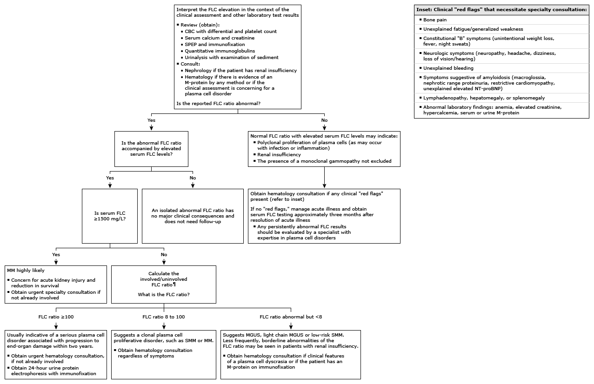

Initial evaluation of abnormal serum free light chains in adults*

This algorithm is intended for use with additional UpToDate content on plasma cell disorders.
FLC: free light chain; CBC: complete blood count; SPEP: serum protein electrophoresis; M-protein: monoclonal immunoglobulin; MM: multiple myeloma; SMM: smoldering multiple myeloma; MGUS: monoclonal gammopathy of unknown significance; NT-proBNP: N-terminal pro-brain natriuretic peptide. * The FLC assay is interpreted by looking at both the absolute level of serum FLC as well as the FLC ratio. The normal reference range for serum kappa FLCs is 3.30 to 19.40 mg/L; for lambda FLCs, 5.71 to 26.30 mg/L, and for the kappa to lambda ratio, 0.26 to 1.65. Interpretation of a specific abnormal result should be based upon the age-adjusted reference range reported with that result. ¶ Although the FLC ratio is reported as kappa/lambda, for purposes of clinical practice, we use involved/uninvolved FLC ratio thresholds to make management decisions. When the FLC ratio is abnormal, calculate the involved/uninvolved FLC ratio by dividing the higher FLC level with the lower level.